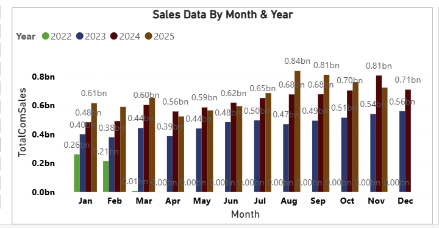
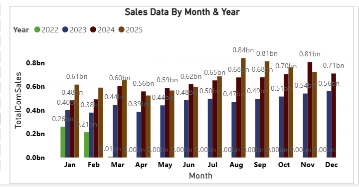

About Me
Senior Data Analyst with over 6 years of experience in retail, banking, and ERP systems. Specialized in Power BI dashboards, SQL data modeling, Odoo ERP reporting automation, SAP data integration, and business performance analysis.
Technical Skills
- Visualization: Power BI, Tableau, Oracle BI Publisher, Report Builder
- Databases: SQL, Oracle, PostgreSQL, MSSQL, MySQL
- ERP: Odoo, SAP, Pointsoft System
- ETL: Pentaho Kettle
- Languages: SQL, PL/SQL, Python, JavaScript, PHP, HTML
- Cloud: SharePoint, OneDrive, Power Automate
Projects
1. Retail Sales Performance Dashboard (Power BI)
Designed KPI dashboard using SAP + POS data. Automated refresh and built advanced DAX.


2. PostgreSQL → Power BI Real-time Reporting
Connected Odoo PostgreSQL database to Power BI for real-time insights.


3. Odoo + SSMS Consolidated Reporting
Merged historical SSMS data with Odoo ERP for unified business reporting.
 


4. POS System Daily Monitoring Dashboard
Automated monitoring to detect missing transactions and store-level errors.


Contact
Email: qqhtay2028@gmail.com
Phone: 09796274608
Location: Yangon, Myanmar